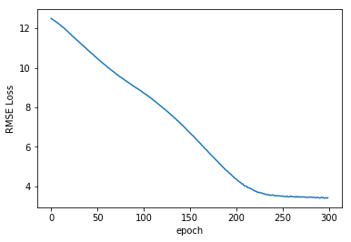

================ by Jawad Haider
04 - Full Artificial Neural Network Code Along¶
- Full Artificial Neural Network Code Along
- Working with tabular data
- Perform standard imports
- Load the NYC Taxi Fares dataset
- Calculate the distance traveled
- Add a datetime column and derive useful statistics
- Separate categorical from continuous columns
- Categorify
- Convert numpy arrays to tensors
- Set an embedding size
- Define a TabularModel
- Define loss function & optimizer
- Perform train/test splits
- Train the model
- Plot the loss function
- Validate the model
- Save the model
- Loading a saved model (starting from scratch)
- Feed new data through the trained model
- Great job!
Full Artificial Neural Network Code Along¶
In the last section we took in four continuous variables (lengths) to perform a classification. In this section well combine continuous and categorical data to perform a regression. The goal is to estimate the cost of a New York City cab ride from several inputs. The inspiration behind this code along is a recent Kaggle competition.
Working with tabular data¶
Deep learning with neural networks is often associated with sophisticated image recognition, and in upcoming sections well train models based on properties like pixels patterns and colors.
Here were working with tabular data (spreadsheets, SQL tables, etc.) with columns of values that may or may not be relevant. As it happens, neural networks can learn to make connections we probably wouldnt have developed on our own. However, to do this we have to handle categorical values separately from continuous ones. Make sure to watch the theory lectures! Youll want to be comfortable with: * continuous vs.categorical values * embeddings * batch normalization * dropout layers
Perform standard imports¶
import torch
import torch.nn as nn
import numpy as np
import pandas as pd
import matplotlib.pyplot as plt
%matplotlib inline
Load the NYC Taxi Fares dataset¶
The Kaggle competition provides a dataset with about 55 million records. The data contains only the pickup date & time, the latitude & longitude (GPS coordinates) of the pickup and dropoff locations, and the number of passengers. It is up to the contest participant to extract any further information. For instance, does the time of day matter? The day of the week? How do we determine the distance traveled from pairs of GPS coordinates?
For this exercise weve whittled the dataset down to just 120,000 records from April 11 to April 24, 2010. The records are randomly sorted. Well show how to calculate distance from GPS coordinates, and how to create a pandas datatime object from a text column. This will let us quickly get information like day of the week, am vs.pm, etc.
Lets get started!
| pickup_datetime | fare_amount | fare_class | pickup_longitude | pickup_latitude | dropoff_longitude | dropoff_latitude | passenger_count | |
|---|---|---|---|---|---|---|---|---|
| 0 | 2010-04-19 08:17:56 UTC | 6.5 | 0 | -73.992365 | 40.730521 | -73.975499 | 40.744746 | 1 |
| 1 | 2010-04-17 15:43:53 UTC | 6.9 | 0 | -73.990078 | 40.740558 | -73.974232 | 40.744114 | 1 |
| 2 | 2010-04-17 11:23:26 UTC | 10.1 | 1 | -73.994149 | 40.751118 | -73.960064 | 40.766235 | 2 |
| 3 | 2010-04-11 21:25:03 UTC | 8.9 | 0 | -73.990485 | 40.756422 | -73.971205 | 40.748192 | 1 |
| 4 | 2010-04-17 02:19:01 UTC | 19.7 | 1 | -73.990976 | 40.734202 | -73.905956 | 40.743115 | 1 |
count 120000.000000
mean 10.040326
std 7.500134
min 2.500000
25% 5.700000
50% 7.700000
75% 11.300000
max 49.900000
Name: fare_amount, dtype: float64
From this we see that fares range from \$2.50 to \$49.90, with a mean of \$10.04 and a median of \$7.70
Calculate the distance traveled¶
The haversine
formula calculates the distance on a sphere between two sets of GPS
coordinates.
Here we assign latitude values with
(phi) and longitude with
(lambda).
The distance formula works out to
where
def haversine_distance(df, lat1, long1, lat2, long2):
"""
Calculates the haversine distance between 2 sets of GPS coordinates in df
"""
r = 6371 # average radius of Earth in kilometers
phi1 = np.radians(df[lat1])
phi2 = np.radians(df[lat2])
delta_phi = np.radians(df[lat2]-df[lat1])
delta_lambda = np.radians(df[long2]-df[long1])
a = np.sin(delta_phi/2)**2 + np.cos(phi1) * np.cos(phi2) * np.sin(delta_lambda/2)**2
c = 2 * np.arctan2(np.sqrt(a), np.sqrt(1-a))
d = (r * c) # in kilometers
return d
df['dist_km'] = haversine_distance(df,'pickup_latitude', 'pickup_longitude', 'dropoff_latitude', 'dropoff_longitude')
df.head()
| pickup_datetime | fare_amount | fare_class | pickup_longitude | pickup_latitude | dropoff_longitude | dropoff_latitude | passenger_count | dist_km | |
|---|---|---|---|---|---|---|---|---|---|
| 0 | 2010-04-19 08:17:56 UTC | 6.5 | 0 | -73.992365 | 40.730521 | -73.975499 | 40.744746 | 1 | 2.126312 |
| 1 | 2010-04-17 15:43:53 UTC | 6.9 | 0 | -73.990078 | 40.740558 | -73.974232 | 40.744114 | 1 | 1.392307 |
| 2 | 2010-04-17 11:23:26 UTC | 10.1 | 1 | -73.994149 | 40.751118 | -73.960064 | 40.766235 | 2 | 3.326763 |
| 3 | 2010-04-11 21:25:03 UTC | 8.9 | 0 | -73.990485 | 40.756422 | -73.971205 | 40.748192 | 1 | 1.864129 |
| 4 | 2010-04-17 02:19:01 UTC | 19.7 | 1 | -73.990976 | 40.734202 | -73.905956 | 40.743115 | 1 | 7.231321 |
Add a datetime column and derive useful statistics¶
By creating a datetime object, we can extract information like day of the week, am vs.pm etc. Note that the data was saved in UTC time. Our data falls in April of 2010 which occurred during Daylight Savings Time in New York. For that reason, well make an adjustment to EDT using UTC-4 (subtracting four hours).
df['EDTdate'] = pd.to_datetime(df['pickup_datetime'].str[:19]) - pd.Timedelta(hours=4)
df['Hour'] = df['EDTdate'].dt.hour
df['AMorPM'] = np.where(df['Hour']<12,'am','pm')
df['Weekday'] = df['EDTdate'].dt.strftime("%a")
df.head()
| pickup_datetime | fare_amount | fare_class | pickup_longitude | pickup_latitude | dropoff_longitude | dropoff_latitude | passenger_count | dist_km | EDTdate | Hour | AMorPM | Weekday | |
|---|---|---|---|---|---|---|---|---|---|---|---|---|---|
| 0 | 2010-04-19 08:17:56 UTC | 6.5 | 0 | -73.992365 | 40.730521 | -73.975499 | 40.744746 | 1 | 2.126312 | 2010-04-19 04:17:56 | 4 | am | Mon |
| 1 | 2010-04-17 15:43:53 UTC | 6.9 | 0 | -73.990078 | 40.740558 | -73.974232 | 40.744114 | 1 | 1.392307 | 2010-04-17 11:43:53 | 11 | am | Sat |
| 2 | 2010-04-17 11:23:26 UTC | 10.1 | 1 | -73.994149 | 40.751118 | -73.960064 | 40.766235 | 2 | 3.326763 | 2010-04-17 07:23:26 | 7 | am | Sat |
| 3 | 2010-04-11 21:25:03 UTC | 8.9 | 0 | -73.990485 | 40.756422 | -73.971205 | 40.748192 | 1 | 1.864129 | 2010-04-11 17:25:03 | 17 | pm | Sun |
| 4 | 2010-04-17 02:19:01 UTC | 19.7 | 1 | -73.990976 | 40.734202 | -73.905956 | 40.743115 | 1 | 7.231321 | 2010-04-16 22:19:01 | 22 | pm | Fri |
Timestamp('2010-04-11 00:00:10')
Timestamp('2010-04-24 23:59:42')
Separate categorical from continuous columns¶
Index(['pickup_datetime', 'fare_amount', 'fare_class', 'pickup_longitude',
'pickup_latitude', 'dropoff_longitude', 'dropoff_latitude',
'passenger_count', 'dist_km', 'EDTdate', 'Hour', 'AMorPM', 'Weekday'],
dtype='object')
cat_cols = ['Hour', 'AMorPM', 'Weekday']
cont_cols = ['pickup_latitude', 'pickup_longitude', 'dropoff_latitude', 'dropoff_longitude', 'passenger_count', 'dist_km']
y_col = ['fare_amount'] # this column contains the labels
cont_cols = [col for col in df.columns if col not in cat_cols + y_col]Here we entered the continuous columns explicitly because there are columns were not running through the model (pickup_datetime and EDTdate)
Categorify¶
Pandas offers a category dtype for converting categorical values to numerical codes. A dataset containing months of the year will be assigned 12 codes, one for each month. These will usually be the integers 0 to 11. Pandas replaces the column values with codes, and retains an index list of category values. In the steps ahead well call the categorical values names and the encodings codes.
# Convert our three categorical columns to category dtypes.
for cat in cat_cols:
df[cat] = df[cat].astype('category')
pickup_datetime object
fare_amount float64
fare_class int64
pickup_longitude float64
pickup_latitude float64
dropoff_longitude float64
dropoff_latitude float64
passenger_count int64
dist_km float64
EDTdate datetime64[ns]
Hour category
AMorPM category
Weekday category
dtype: object
We can see that df[Hour] is a categorical feature by displaying some of the rows:
0 4
1 11
2 7
3 17
4 22
Name: Hour, dtype: category
Categories (24, int64): [0, 1, 2, 3, ..., 20, 21, 22, 23]
Here our categorical names are the integers 0 through 23, for a total of 24 unique categories. These values also correspond to the codes assigned to each name.
We can access the category names with Series.cat.categories or just the codes with Series.cat.codes. This will make more sense if we look at df[AMorPM]:
0 am
1 am
2 am
3 pm
4 pm
Name: AMorPM, dtype: category
Categories (2, object): [am, pm]
Index(['am', 'pm'], dtype='object')
0 0
1 0
2 0
3 1
4 1
dtype: int8
Index(['Fri', 'Mon', 'Sat', 'Sun', 'Thu', 'Tue', 'Wed'], dtype='object')
0 1
1 2
2 2
3 3
4 0
dtype: int8
Now we want to combine the three categorical columns into one input array using numpy.stack We dont want the Series index, just the values.
hr = df['Hour'].cat.codes.values
ampm = df['AMorPM'].cat.codes.values
wkdy = df['Weekday'].cat.codes.values
cats = np.stack([hr, ampm, wkdy], 1)
cats[:5]
array([[ 4, 0, 1],
[11, 0, 2],
[ 7, 0, 2],
[17, 1, 3],
[22, 1, 0]], dtype=int8)
cats = np.stack([df[col].cat.codes.values for col in cat_cols], 1)Dont worry about the dtype for now, we can make it int64 when we convert it to a tensor.
Convert numpy arrays to tensors¶
# Convert categorical variables to a tensor
cats = torch.tensor(cats, dtype=torch.int64)
# this syntax is ok, since the source data is an array, not an existing tensor
cats[:5]
tensor([[ 4, 0, 1],
[11, 0, 2],
[ 7, 0, 2],
[17, 1, 3],
[22, 1, 0]])
We can feed all of our continuous variables into the model as a tensor. Note that were not normalizing the values here; well let the model perform this step.
# Convert continuous variables to a tensor
conts = np.stack([df[col].values for col in cont_cols], 1)
conts = torch.tensor(conts, dtype=torch.float)
conts[:5]
tensor([[ 40.7305, -73.9924, 40.7447, -73.9755, 1.0000, 2.1263],
[ 40.7406, -73.9901, 40.7441, -73.9742, 1.0000, 1.3923],
[ 40.7511, -73.9941, 40.7662, -73.9601, 2.0000, 3.3268],
[ 40.7564, -73.9905, 40.7482, -73.9712, 1.0000, 1.8641],
[ 40.7342, -73.9910, 40.7431, -73.9060, 1.0000, 7.2313]])
'torch.FloatTensor'
# Convert labels to a tensor
y = torch.tensor(df[y_col].values, dtype=torch.float).reshape(-1,1)
y[:5]
tensor([[ 6.5000],
[ 6.9000],
[10.1000],
[ 8.9000],
[19.7000]])
torch.Size([120000, 3])
torch.Size([120000, 6])
torch.Size([120000, 1])
Set an embedding size¶
The rule of thumb for determining the embedding size is to divide the number of unique entries in each column by 2, but not to exceed 50.
# This will set embedding sizes for Hours, AMvsPM and Weekdays
cat_szs = [len(df[col].cat.categories) for col in cat_cols]
emb_szs = [(size, min(50, (size+1)//2)) for size in cat_szs]
emb_szs
[(24, 12), (2, 1), (7, 4)]
Define a TabularModel¶
This somewhat follows the fast.ai library The goal is to define a model based on the number of continuous columns (given by conts.shape[1]) plus the number of categorical columns and their embeddings (given by len(emb_szs) and emb_szs respectively). The output would either be a regression (a single float value), or a classification (a group of bins and their softmax values). For this exercise our output will be a single regression value. Note that well assume our data contains both categorical and continuous data. You can add boolean parameters to your own model class to handle a variety of datasets.
1. Extend the base Module class, set up the following parameters: - emb_szs: list of tuples: each categorical variable size is paired with an embedding size - n_cont: int: number of continuous variables - out_sz: int: output size - layers: list of ints: layer sizes - p: float: dropout probability for each layer (for simplicity well use the same value throughout) class TabularModel(nn.Module):
def \_\_init\_\_(self, emb_szs, n_cont, out_sz, layers, p=0.5):
super().\_\_init\_\_()
2. Set up the embedded layers with torch.nn.ModuleList() and torch.nn.Embedding()
Categorical data will be filtered through these Embeddings in the forward section.
self.embeds = nn.ModuleList(\[nn.Embedding(ni, nf) for ni,nf in emb_szs\])
3. Set up a dropout function for the embeddings with torch.nn.Dropout() The default p-value=0.5
self.emb_drop = nn.Dropout(emb_drop)
4. Set up a normalization function for the continuous variables with torch.nn.BatchNorm1d()
self.bn_cont = nn.BatchNorm1d(n_cont)
5. Set up a sequence of neural network layers where each level includes a Linear function, an activation function (well use ReLU), a normalization step, and a dropout layer. Well combine the list of layers with torch.nn.Sequential()
self.bn_cont = nn.BatchNorm1d(n_cont)
layerlist = \[\]
n_emb = sum((nf for ni,nf in emb_szs))
n_in = n_emb + n_cont
for i in layers:
layerlist.append(nn.Linear(n_in,i))
layerlist.append(nn.ReLU(inplace=True))
layerlist.append(nn.BatchNorm1d(i))
layerlist.append(nn.Dropout(p))
n_in = i
layerlist.append(nn.Linear(layers\[-1\],out_sz))
self.layers = nn.Sequential(\*layerlist)
6. Define the forward method. Preprocess the embeddings and normalize the continuous variables before passing them through the layers.
Use torch.cat() to combine multiple tensors into one.
def forward(self, x_cat, x_cont):
embeddings = \[\]
for i,e in enumerate(self.embeds):
embeddings.append(e(x_cat\[:,i\]))
x = torch.cat(embeddings, 1)
x = self.emb_drop(x)
x_cont = self.bn_cont(x_cont)
x = torch.cat(\[x, x_cont\], 1)
x = self.layers(x)
return x
tensor([[ 4, 0, 1],
[11, 0, 2],
[ 7, 0, 2],
[17, 1, 3]])
[(24, 12), (2, 1), (7, 4)]
# This is assigned inside the __init__() method
selfembeds = nn.ModuleList([nn.Embedding(ni, nf) for ni,nf in emb_szs])
selfembeds
ModuleList(
(0): Embedding(24, 12)
(1): Embedding(2, 1)
(2): Embedding(7, 4)
)
[(0, Embedding(24, 12)), (1, Embedding(2, 1)), (2, Embedding(7, 4))]
# This happens inside the forward() method
embeddingz = []
for i,e in enumerate(selfembeds):
embeddingz.append(e(catz[:,i]))
embeddingz
[tensor([[ 0.7031, 0.5132, -1.0168, 1.3594, 0.7909, -1.2648, 0.9565, 0.6827,
0.4922, 0.1282, -0.9863, 0.2622],
[ 0.0402, -0.8209, 2.5186, 0.5037, 0.0925, 0.0058, 1.0398, 1.7655,
0.0216, -0.1349, -1.0968, 1.4534],
[ 0.5162, -0.6815, 1.4828, 0.1271, 1.1672, 0.8569, 1.1472, 0.7672,
0.4720, 1.3629, 1.2446, 0.3470],
[ 0.1047, 0.2153, -1.4652, -1.6907, -0.0670, 0.9863, 0.7836, -1.3762,
1.6670, 0.1276, 1.2241, 0.1415]], grad_fn=<EmbeddingBackward>),
tensor([[-1.1156],
[-1.1156],
[-1.1156],
[-0.7577]], grad_fn=<EmbeddingBackward>),
tensor([[-0.8579, -0.4516, 0.3814, 0.9935],
[ 0.6264, -1.1347, 1.9039, 1.1867],
[ 0.6264, -1.1347, 1.9039, 1.1867],
[ 0.1609, -0.1231, 0.5787, -0.3180]], grad_fn=<EmbeddingBackward>)]
tensor([[ 0.7031, 0.5132, -1.0168, 1.3594, 0.7909, -1.2648, 0.9565, 0.6827,
0.4922, 0.1282, -0.9863, 0.2622, -1.1156, -0.8579, -0.4516, 0.3814,
0.9935],
[ 0.0402, -0.8209, 2.5186, 0.5037, 0.0925, 0.0058, 1.0398, 1.7655,
0.0216, -0.1349, -1.0968, 1.4534, -1.1156, 0.6264, -1.1347, 1.9039,
1.1867],
[ 0.5162, -0.6815, 1.4828, 0.1271, 1.1672, 0.8569, 1.1472, 0.7672,
0.4720, 1.3629, 1.2446, 0.3470, -1.1156, 0.6264, -1.1347, 1.9039,
1.1867],
[ 0.1047, 0.2153, -1.4652, -1.6907, -0.0670, 0.9863, 0.7836, -1.3762,
1.6670, 0.1276, 1.2241, 0.1415, -0.7577, 0.1609, -0.1231, 0.5787,
-0.3180]], grad_fn=<CatBackward>)
tensor([[ 0.0000, 0.8553, -1.6946, 0.0000, 1.3182, -2.1080, 1.5942, 1.1378,
0.8204, 0.2137, -1.6438, 0.0000, -0.0000, -1.4298, -0.0000, 0.6357,
0.0000],
[ 0.0000, -1.3682, 0.0000, 0.8395, 0.0000, 0.0000, 0.0000, 2.9425,
0.0359, -0.0000, -1.8280, 2.4223, -0.0000, 0.0000, -1.8912, 3.1731,
0.0000],
[ 0.0000, -1.1359, 0.0000, 0.0000, 0.0000, 0.0000, 0.0000, 1.2786,
0.7867, 2.2715, 0.0000, 0.5783, -0.0000, 1.0440, -1.8912, 3.1731,
0.0000],
[ 0.0000, 0.3589, -2.4420, -0.0000, -0.1117, 1.6438, 1.3059, -0.0000,
2.7783, 0.2127, 2.0402, 0.0000, -0.0000, 0.0000, -0.0000, 0.0000,
-0.5300]], grad_fn=<MulBackward0>)
class TabularModel(nn.Module):
def __init__(self, emb_szs, n_cont, out_sz, layers, p=0.5):
super().__init__()
self.embeds = nn.ModuleList([nn.Embedding(ni, nf) for ni,nf in emb_szs])
self.emb_drop = nn.Dropout(p)
self.bn_cont = nn.BatchNorm1d(n_cont)
layerlist = []
n_emb = sum((nf for ni,nf in emb_szs))
n_in = n_emb + n_cont
for i in layers:
layerlist.append(nn.Linear(n_in,i))
layerlist.append(nn.ReLU(inplace=True))
layerlist.append(nn.BatchNorm1d(i))
layerlist.append(nn.Dropout(p))
n_in = i
layerlist.append(nn.Linear(layers[-1],out_sz))
self.layers = nn.Sequential(*layerlist)
def forward(self, x_cat, x_cont):
embeddings = []
for i,e in enumerate(self.embeds):
embeddings.append(e(x_cat[:,i]))
x = torch.cat(embeddings, 1)
x = self.emb_drop(x)
x_cont = self.bn_cont(x_cont)
x = torch.cat([x, x_cont], 1)
x = self.layers(x)
return x
TabularModel(
(embeds): ModuleList(
(0): Embedding(24, 12)
(1): Embedding(2, 1)
(2): Embedding(7, 4)
)
(emb_drop): Dropout(p=0.4)
(bn_cont): BatchNorm1d(6, eps=1e-05, momentum=0.1, affine=True, track_running_stats=True)
(layers): Sequential(
(0): Linear(in_features=23, out_features=200, bias=True)
(1): ReLU(inplace)
(2): BatchNorm1d(200, eps=1e-05, momentum=0.1, affine=True, track_running_stats=True)
(3): Dropout(p=0.4)
(4): Linear(in_features=200, out_features=100, bias=True)
(5): ReLU(inplace)
(6): BatchNorm1d(100, eps=1e-05, momentum=0.1, affine=True, track_running_stats=True)
(7): Dropout(p=0.4)
(8): Linear(in_features=100, out_features=1, bias=True)
)
)
Define loss function & optimizer¶
PyTorch does not offer a built-in
RMSE
Loss function, and it would be nice to see this in place of MSE.
For this reason, well simply apply the torch.sqrt() function
to the output of MSELoss during training.
criterion = nn.MSELoss() # we'll convert this to RMSE later
optimizer = torch.optim.Adam(model.parameters(), lr=0.001)
Perform train/test splits¶
At this point our batch size is the entire dataset of 120,000 records. This will take a long time to train, so you might consider reducing this. Well use 60,000. Recall that our tensors are already randomly shuffled.
batch_size = 60000
test_size = int(batch_size * .2)
cat_train = cats[:batch_size-test_size]
cat_test = cats[batch_size-test_size:batch_size]
con_train = conts[:batch_size-test_size]
con_test = conts[batch_size-test_size:batch_size]
y_train = y[:batch_size-test_size]
y_test = y[batch_size-test_size:batch_size]
48000
12000
Train the model¶
Expect this to take 30 minutes or more! Weve added code to tell us the duration at the end.
import time
start_time = time.time()
epochs = 300
losses = []
for i in range(epochs):
i+=1
y_pred = model(cat_train, con_train)
loss = torch.sqrt(criterion(y_pred, y_train)) # RMSE
losses.append(loss)
# a neat trick to save screen space:
if i%25 == 1:
print(f'epoch: {i:3} loss: {loss.item():10.8f}')
optimizer.zero_grad()
loss.backward()
optimizer.step()
print(f'epoch: {i:3} loss: {loss.item():10.8f}') # print the last line
print(f'\nDuration: {time.time() - start_time:.0f} seconds') # print the time elapsed
epoch: 1 loss: 12.49953079
epoch: 26 loss: 11.52666759
epoch: 51 loss: 10.47162533
epoch: 76 loss: 9.53090382
epoch: 101 loss: 8.72838020
epoch: 126 loss: 7.81538534
epoch: 151 loss: 6.70782852
epoch: 176 loss: 5.48520994
epoch: 201 loss: 4.37029028
epoch: 226 loss: 3.70538783
epoch: 251 loss: 3.51656818
epoch: 276 loss: 3.44707990
epoch: 300 loss: 3.42467499
Duration: 730 seconds
Plot the loss function¶

Validate the model¶
Here we want to run the entire test set through the model, and compare
it to the known labels.
For this step we dont want to update
weights and biases, so we set torch.no_grad()
# TO EVALUATE THE ENTIRE TEST SET
with torch.no_grad():
y_val = model(cat_test, con_test)
loss = torch.sqrt(criterion(y_val, y_test))
print(f'RMSE: {loss:.8f}')
RMSE: 3.34590030
This means that on average, predicted values are within $3.31 of the actual value.
Now lets look at the first 50 predicted values:
print(f'{"PREDICTED":>12} {"ACTUAL":>8} {"DIFF":>8}')
for i in range(50):
diff = np.abs(y_val[i].item()-y_test[i].item())
print(f'{i+1:2}. {y_val[i].item():8.4f} {y_test[i].item():8.4f} {diff:8.4f}')
PREDICTED ACTUAL DIFF
1. 2.5379 2.9000 0.3621
2. 25.1634 5.7000 19.4634
3. 6.3749 7.7000 1.3251
4. 13.4677 12.5000 0.9677
5. 4.4992 4.1000 0.3992
6. 4.8968 5.3000 0.4032
7. 3.1796 3.7000 0.5204
8. 17.7814 14.5000 3.2814
9. 6.1348 5.7000 0.4348
10. 12.0325 10.1000 1.9325
11. 6.1323 4.5000 1.6323
12. 6.9208 6.1000 0.8208
13. 5.9448 6.9000 0.9552
14. 13.4625 14.1000 0.6375
15. 5.9277 4.5000 1.4277
16. 27.5778 34.1000 6.5222
17. 3.2774 12.5000 9.2226
18. 5.7506 4.1000 1.6506
19. 8.1940 8.5000 0.3060
20. 6.2858 5.3000 0.9858
21. 13.6693 11.3000 2.3693
22. 9.6759 10.5000 0.8241
23. 16.0568 15.3000 0.7568
24. 19.3310 14.9000 4.4310
25. 48.6873 49.5700 0.8827
26. 6.3257 5.3000 1.0257
27. 6.0392 3.7000 2.3392
28. 7.1921 6.5000 0.6921
29. 14.9567 14.1000 0.8567
30. 6.7476 4.9000 1.8476
31. 4.3447 3.7000 0.6447
32. 35.6969 38.6700 2.9731
33. 13.9892 12.5000 1.4892
34. 12.8934 16.5000 3.6066
35. 6.3164 5.7000 0.6164
36. 5.9684 8.9000 2.9316
37. 16.1289 22.1000 5.9711
38. 7.6541 12.1000 4.4459
39. 8.6153 10.1000 1.4847
40. 4.0447 3.3000 0.7447
41. 10.2168 8.5000 1.7168
42. 8.8325 8.1000 0.7325
43. 15.2500 14.5000 0.7500
44. 6.3571 4.9000 1.4571
45. 9.7002 8.5000 1.2002
46. 12.1134 12.1000 0.0134
47. 24.3001 23.7000 0.6001
48. 2.8357 3.7000 0.8643
49. 6.8266 9.3000 2.4734
50. 8.2082 8.1000 0.1082
So while many predictions were off by a few cents, some were off by \$19.00. Feel free to change the batch size, test size, and number of epochs to obtain a better model.
Save the model¶
We can save a trained model to a file in case we want to come back later
and feed new data through it. The best practice is to save the state of
the model (weights & biases) and not the full definition. Also, we want
to ensure that only a trained model is saved, to prevent overwriting a
previously saved model with an untrained one.
For more information
visit
https://pytorch.org/tutorials/beginner/saving_loading_models.html
# Make sure to save the model only after the training has happened!
if len(losses) == epochs:
torch.save(model.state_dict(), 'TaxiFareRegrModel.pt')
else:
print('Model has not been trained. Consider loading a trained model instead.')
Loading a saved model (starting from scratch)¶
We can load the trained weights and biases from a saved model. If weve just opened the notebook, well have to run standard imports and function definitions. To demonstrate, restart the kernel before proceeding.
import torch
import torch.nn as nn
import numpy as np
import pandas as pd
def haversine_distance(df, lat1, long1, lat2, long2):
r = 6371
phi1 = np.radians(df[lat1])
phi2 = np.radians(df[lat2])
delta_phi = np.radians(df[lat2]-df[lat1])
delta_lambda = np.radians(df[long2]-df[long1])
a = np.sin(delta_phi/2)**2 + np.cos(phi1) * np.cos(phi2) * np.sin(delta_lambda/2)**2
c = 2 * np.arctan2(np.sqrt(a), np.sqrt(1-a))
return r * c
class TabularModel(nn.Module):
def __init__(self, emb_szs, n_cont, out_sz, layers, p=0.5):
super().__init__()
self.embeds = nn.ModuleList([nn.Embedding(ni, nf) for ni,nf in emb_szs])
self.emb_drop = nn.Dropout(p)
self.bn_cont = nn.BatchNorm1d(n_cont)
layerlist = []
n_emb = sum((nf for ni,nf in emb_szs))
n_in = n_emb + n_cont
for i in layers:
layerlist.append(nn.Linear(n_in,i))
layerlist.append(nn.ReLU(inplace=True))
layerlist.append(nn.BatchNorm1d(i))
layerlist.append(nn.Dropout(p))
n_in = i
layerlist.append(nn.Linear(layers[-1],out_sz))
self.layers = nn.Sequential(*layerlist)
def forward(self, x_cat, x_cont):
embeddings = []
for i,e in enumerate(self.embeds):
embeddings.append(e(x_cat[:,i]))
x = torch.cat(embeddings, 1)
x = self.emb_drop(x)
x_cont = self.bn_cont(x_cont)
x = torch.cat([x, x_cont], 1)
return self.layers(x)
Now define the model. Before we can load the saved settings, we need to instantiate our TabularModel with the parameters we used before (embedding sizes, number of continuous columns, output size, layer sizes, and dropout layer p-value).
Once the model is set up, loading the saved settings is a snap.
model2.load_state_dict(torch.load('TaxiFareRegrModel.pt'));
model2.eval() # be sure to run this step!
TabularModel(
(embeds): ModuleList(
(0): Embedding(24, 12)
(1): Embedding(2, 1)
(2): Embedding(7, 4)
)
(emb_drop): Dropout(p=0.4)
(bn_cont): BatchNorm1d(6, eps=1e-05, momentum=0.1, affine=True, track_running_stats=True)
(layers): Sequential(
(0): Linear(in_features=23, out_features=200, bias=True)
(1): ReLU(inplace)
(2): BatchNorm1d(200, eps=1e-05, momentum=0.1, affine=True, track_running_stats=True)
(3): Dropout(p=0.4)
(4): Linear(in_features=200, out_features=100, bias=True)
(5): ReLU(inplace)
(6): BatchNorm1d(100, eps=1e-05, momentum=0.1, affine=True, track_running_stats=True)
(7): Dropout(p=0.4)
(8): Linear(in_features=100, out_features=1, bias=True)
)
)
Next well define a function that takes in new parameters from the user, performs all of the preprocessing steps above, and passes the new data through our trained model.
def test_data(mdl): # pass in the name of the new model
# INPUT NEW DATA
plat = float(input('What is the pickup latitude? '))
plong = float(input('What is the pickup longitude? '))
dlat = float(input('What is the dropoff latitude? '))
dlong = float(input('What is the dropoff longitude? '))
psngr = int(input('How many passengers? '))
dt = input('What is the pickup date and time?\nFormat as YYYY-MM-DD HH:MM:SS ')
# PREPROCESS THE DATA
dfx_dict = {'pickup_latitude':plat,'pickup_longitude':plong,'dropoff_latitude':dlat,
'dropoff_longitude':dlong,'passenger_count':psngr,'EDTdate':dt}
dfx = pd.DataFrame(dfx_dict, index=[0])
dfx['dist_km'] = haversine_distance(dfx,'pickup_latitude', 'pickup_longitude',
'dropoff_latitude', 'dropoff_longitude')
dfx['EDTdate'] = pd.to_datetime(dfx['EDTdate'])
# We can skip the .astype(category) step since our fields are small,
# and encode them right away
dfx['Hour'] = dfx['EDTdate'].dt.hour
dfx['AMorPM'] = np.where(dfx['Hour']<12,0,1)
dfx['Weekday'] = dfx['EDTdate'].dt.strftime("%a")
dfx['Weekday'] = dfx['Weekday'].replace(['Fri','Mon','Sat','Sun','Thu','Tue','Wed'],
[0,1,2,3,4,5,6]).astype('int64')
# CREATE CAT AND CONT TENSORS
cat_cols = ['Hour', 'AMorPM', 'Weekday']
cont_cols = ['pickup_latitude', 'pickup_longitude', 'dropoff_latitude',
'dropoff_longitude', 'passenger_count', 'dist_km']
xcats = np.stack([dfx[col].values for col in cat_cols], 1)
xcats = torch.tensor(xcats, dtype=torch.int64)
xconts = np.stack([dfx[col].values for col in cont_cols], 1)
xconts = torch.tensor(xconts, dtype=torch.float)
# PASS NEW DATA THROUGH THE MODEL WITHOUT PERFORMING A BACKPROP
with torch.no_grad():
z = mdl(xcats, xconts)
print(f'\nThe predicted fare amount is ${z.item():.2f}')
Feed new data through the trained model¶
For convenience, here are the max and min values for each of the variables:
| Column | Minimum | Maximum |
|---|---|---|
| pickup_latitude | 40 | 41 |
| pickup_longitude | -74.5 | -73.3 |
| dropoff_latitude | 40 | 41 |
| dropoff_longitude | -74.5 | -73.3 |
| passenger_count | 1 | 5 |
| EDTdate | 2010-04-11 00:00:00 | 2010-04-24 23:59:42 |